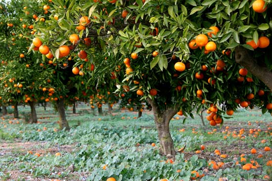
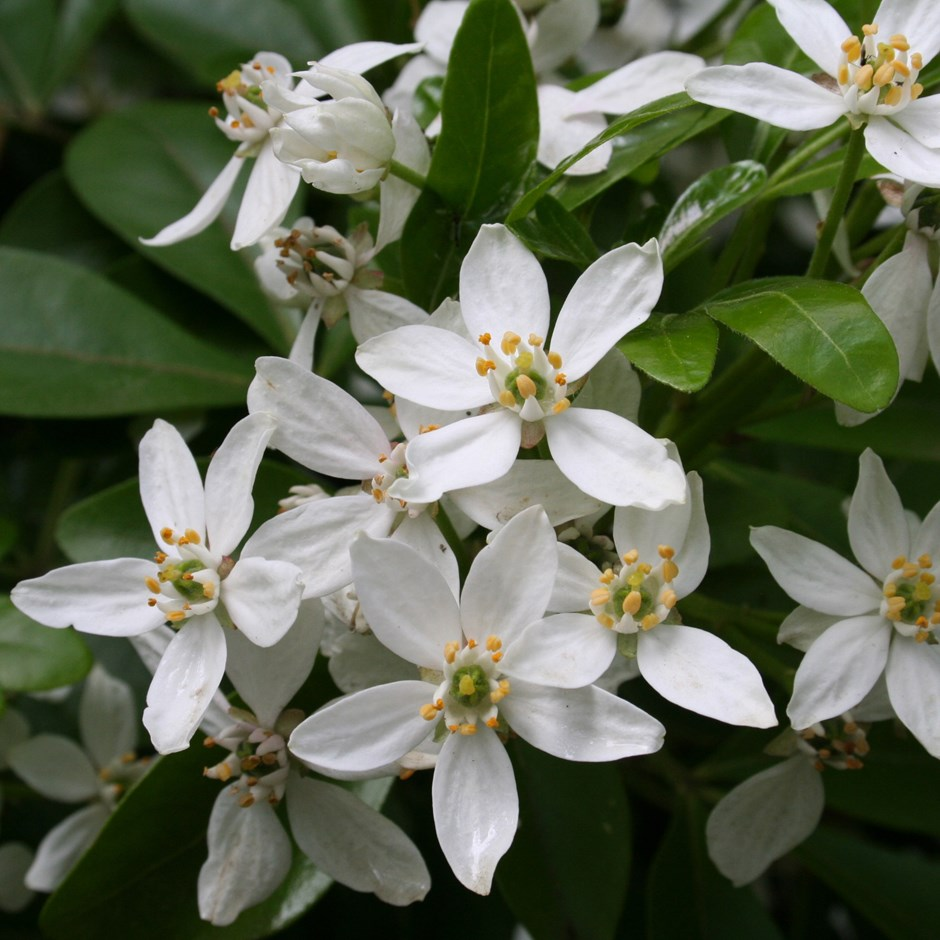
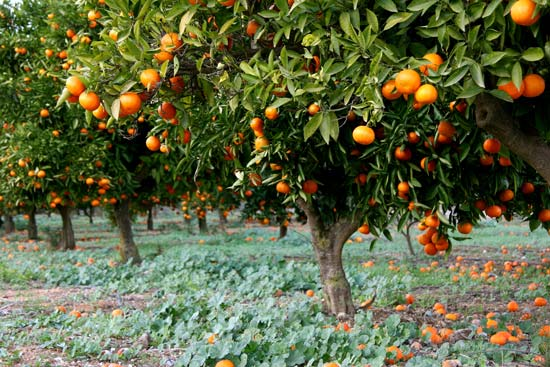
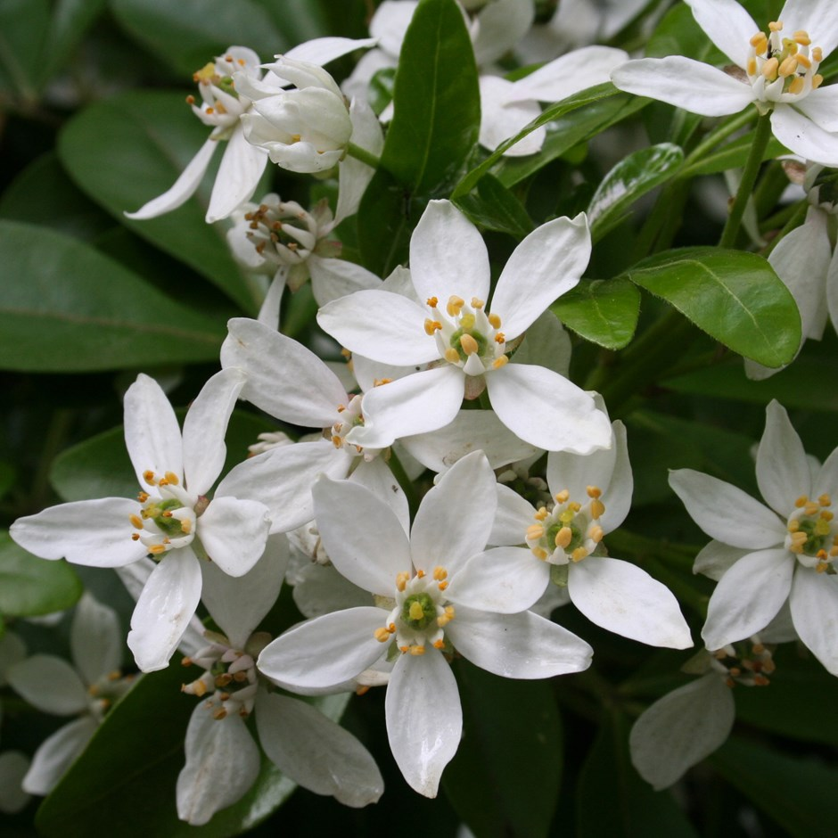
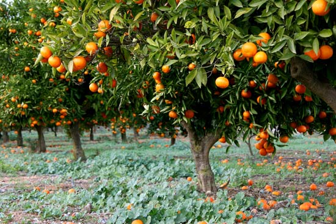
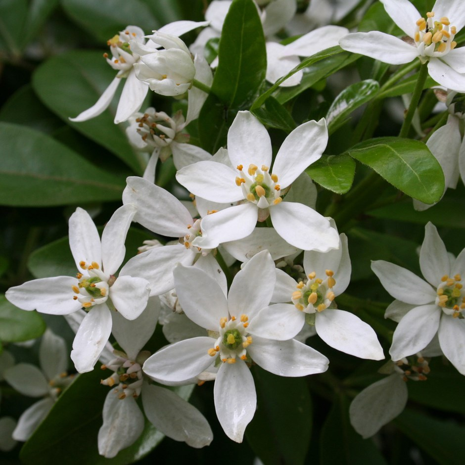
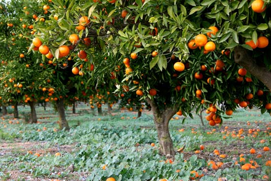
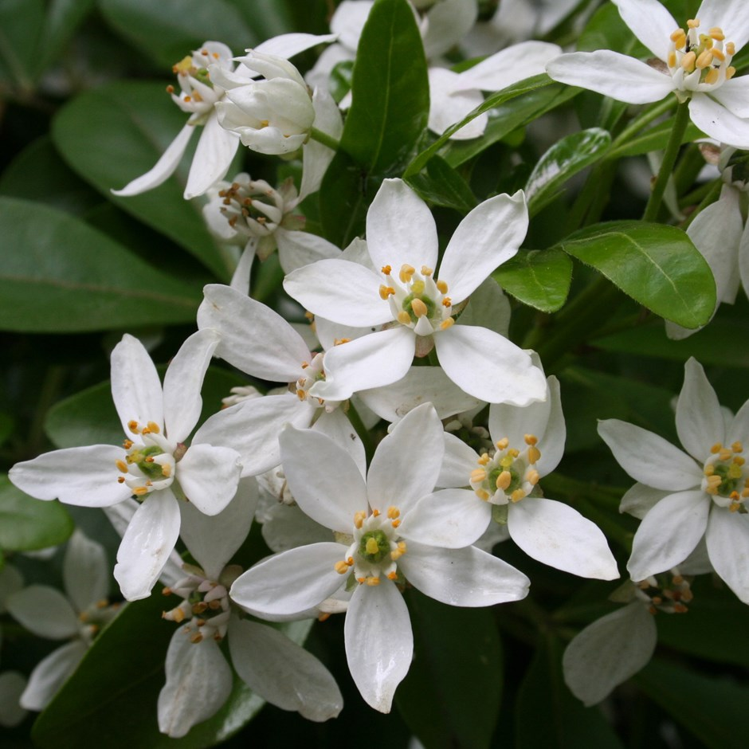

Citrus x Sinensis is the tree (middle) that grows these wonderfull fruits called oranges (left). It is an evergreen tree that stands around 30ft tall. The blossums (right) are what actually turn into oranges after almost a year.
Step 1:Cut the top and bottoms off 6 oranges then peel them and set a least one set of peels aside.
Step 2:stand them upright and slice them into 5 slices.
Step 3:Fill a large bowl with cold water and ice then in a heavy bottomed soucepan add 1 cup of sugar over medium heat then shake and swirl until it forms an even, dark caramel layer.
Step 4:Once it smells like caramel and smokes alot you should take the pan of the heat and put it's bottom in the ice bowl.
Step 5:Carefully add 1/2 cups of warm water. Return mixture to pan on low heat and stir until mixture dissolves then let it cool and put in jar.
Step 6:Cut that peel you set aside into match sticks then add some water to the pan and boil for 1 minute over medium heat then drain.
Step 7:pour the sauce over the oranges slices in a bowl and sprinkle orange peel then chill for several hours before serving.
Click here to go back to the plate.